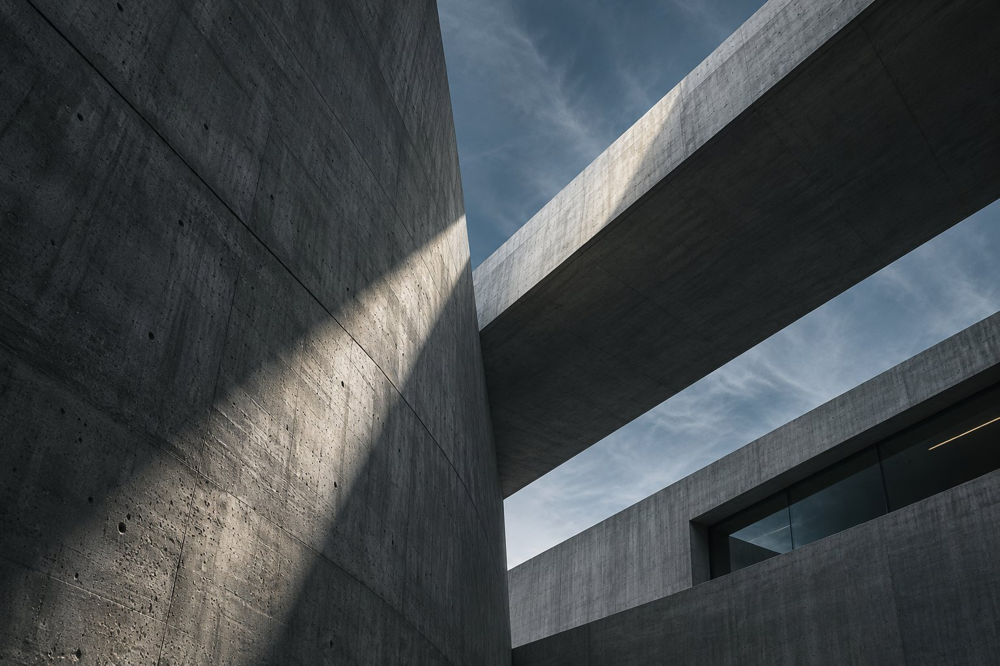
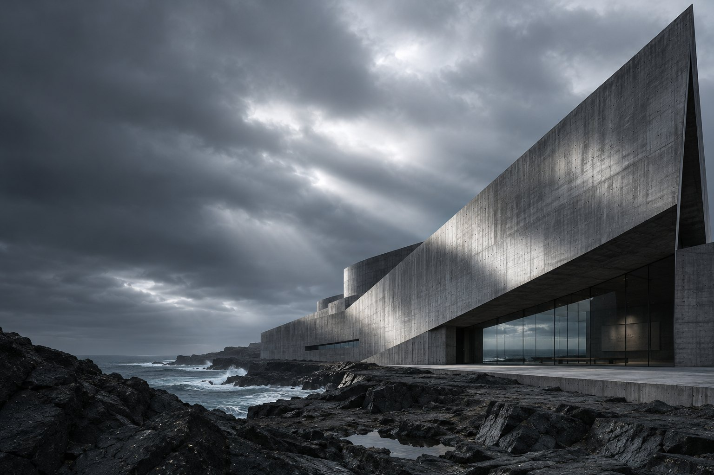

МонолитАрхитектура
Портфолио Арт-дирекшн
Форма
и свет.
Визуальные концепции на стыке архитектуры, предметного дизайна и фотографии.
Смотреть работыГалерея
Избранные работы
Шесть концепций о пространстве, материале и свете.


Подход
Внимание к деталям
Ракурс задаёт масштаб, свет проявляет фактуру, а паузы между объектами делают композицию яснее. В каждой работе эти решения помогают раскрыть характер материала и пространства.
Контакты
Обсудим проект
hello@example.com
Пример контактного адреса